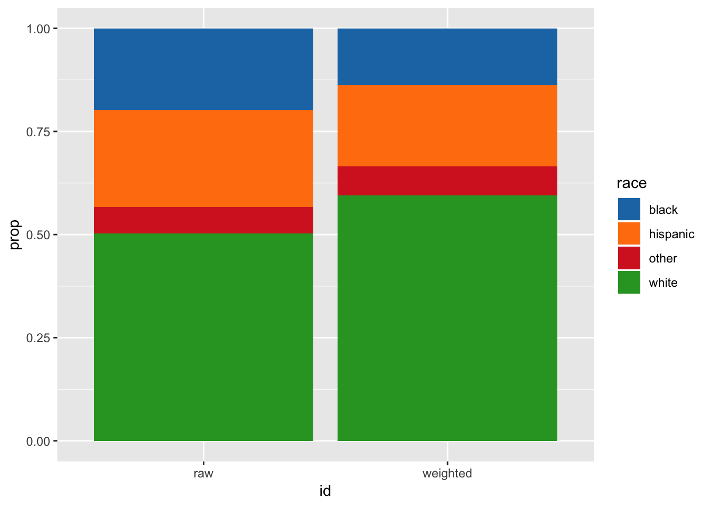

Chapter 2 Egos
The full dataset from 2006-2015 includes data from 43303 respondents. What follows are some basic unweighted & weighted demographic descriptives for respondents as well as other of sexual partnership variables of interest.
2.1 Sex
no NAs
2.2 Age
No NAs
## Warning: Coercing age to character.2.3 Race
2.3.1 Proportion, All
No NAs 
2.3.2 Counts, By Sex
2.4 Age Category & Race
2.5 Counts (raw)
2.5.1 Females
| agecat | b | h | o | w |
|---|---|---|---|---|
| 15-19 | 880 | 1166 | 267 | 2018 |
| 20-24 | 920 | 903 | 229 | 1959 |
| 25-29 | 1008 | 1061 | 297 | 2117 |
| 30-34 | 843 | 1046 | 235 | 1934 |
| 35-39 | 682 | 781 | 248 | 1773 |
| 40-44 | 622 | 618 | 187 | 1785 |
2.5.2 Males
| agecat | b | h | o | w |
|---|---|---|---|---|
| 15-19 | 896 | 1220 | 297 | 2052 |
| 20-24 | 627 | 752 | 210 | 1685 |
| 25-29 | 587 | 777 | 269 | 1818 |
| 30-34 | 491 | 778 | 216 | 1588 |
| 35-39 | 477 | 593 | 191 | 1481 |
| 40-44 | 543 | 474 | 161 | 1541 |
2.6 needs work - Sex Group FEMALES??
Of those sexually active in the last year: